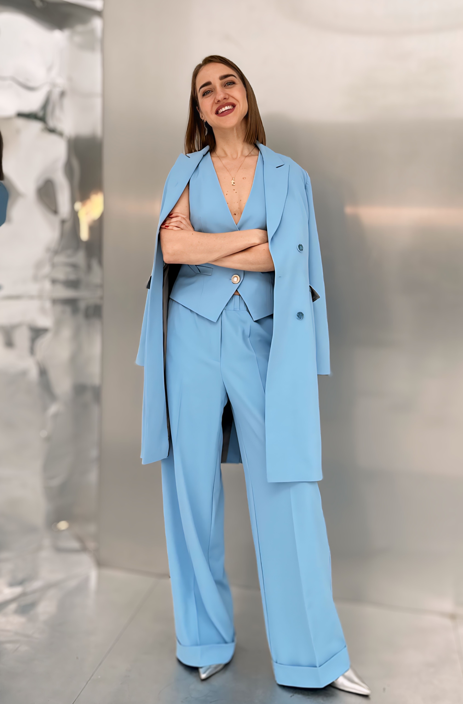

₽
Прибыль есть только на бумаге
Выручка идет, команда занята, проекты двигаются, но у собственника нет ясного ответа, что реально приносит деньги.
Я помогаю собственникам и руководителям выстроить сильный финансовый контур: от логики цифр и денежного потока до управленческой отчетности, бюджетов и регулярной финансовой опоры для роста бизнеса.

Этот формат подходит бизнесу, который уже вырос из интуитивного управления, но еще не получил сильную финансовую систему: с понятной прибылью, денежным потоком, приоритетами и управленческой опорой для собственника.
Выручка идет, команда занята, проекты двигаются, но у собственника нет ясного ответа, что реально приносит деньги.
Поступления и платежи не собраны в систему, поэтому бизнес регулярно попадает в напряжение, кассовые разрывы и срочные ручные решения.
Компания масштабируется, но финансовая модель, отчетность и контроль не успевают за ростом и начинают тормозить развитие.
Собственнику нужна опора в цифрах и решениях, но найм штатного CFO пока избыточен или не закрывает текущую задачу быстро.
Смысл работы — дать собственнику ясность, контроль и спокойствие: чтобы решения принимались на основе цифр, а не на ощущениях, догадках и чужих интерпретациях.
Финансовые данные перестают быть хаотичным массивом информации и превращаются в понятную систему для собственника и команды.
Появляется понимание, где деньги формируются, где теряются и как заранее видеть напряжение по денежному потоку.
Становится видно, какие направления, продукты и проекты создают прибыль, а какие только занимают ресурс и искажают картину бизнеса.
Финансовая модель, бюджеты и план-факт дают бизнесу структуру, при которой рост становится управляемым, а не случайным.
Каждый формат закрывает отдельный уровень задачи: понять, что происходит с бизнесом сейчас; выстроить систему; либо передать финансовую функцию в надежные руки на регулярной основе.
Разбор текущей финансовой картины для собственника: где бизнес теряет деньги, где искажается прибыль, какие управленческие риски уже накопились и что нужно делать в первую очередь.
Создаю для бизнеса рабочую финансовую систему, в которой собственник видит реальную прибыль, движение денег, отклонения от плана и основу для управленческих решений.
Подключаюсь как финансовый директор для собственника и бизнеса: помогаю держать под контролем прибыль, деньги, финансовые решения и управленческую логику компании на регулярной основе.
Каждый этап нужен не ради отчета, а ради того, чтобы у собственника появилась ясность, контроль и основа для решений.
Смотрю текущую структуру учета, денежный поток, прибыльность и ключевые управленческие вопросы.
Выстраиваю финансовую логику бизнеса: показатели, отчетность, бюджеты и структуру контроля.
Настраиваю рабочие инструменты, форматы отчетов, ответственность и понятную ритмику управления.
Сопровождаю, анализирую отклонения, помогаю принимать решения и держать финансы под контролем.
Здесь важны не длинные биографические детали, а профессиональная опора для клиента: опыт, зрелость, умение видеть бизнес целиком и переводить цифры в управленческие решения.

Я не просто собираю цифры — я помогаю собственнику видеть финансовую реальность бизнеса ясно, спокойно и без искажений.
Я работаю с бизнесом как финансовый директор и партнер собственника: выстраиваю управленческий учет, усиливаю финансовую логику компании, помогаю видеть реальную прибыль, движение денег и точки роста. Моя задача — не усложнять, а делать финансы понятными, точными и полезными для решения конкретных бизнес-задач.
Напишите мне, и мы обсудим текущую ситуацию бизнеса, ваши финансовые задачи и подходящий формат работы: диагностика, внедрение системы или регулярное сопровождение в роли CFO.